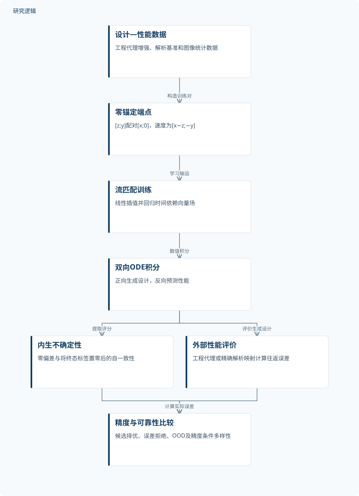
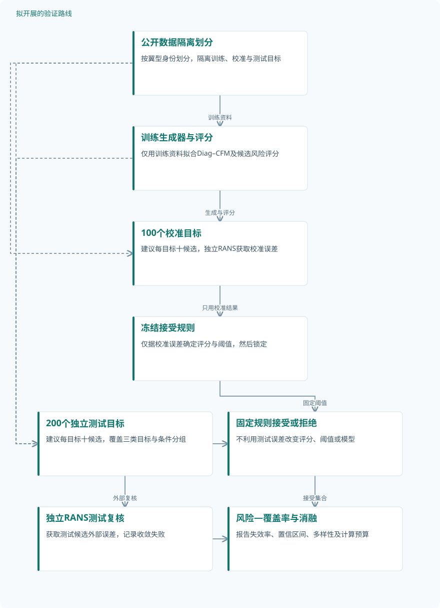

论文精读
基于对角流匹配的可拒绝预测生成式逆向设计
Generative Inverse Design with Abstention via Diagonal Flow Matching
精读更新 2026-10-06 23:17 · 依据论文全文整理
逆向设计不仅要回答“怎样生成满足目标的设计”，还要判断“什么时候不该相信生成结果”。De Campos等提出的Diagonal Flow Matching，通过把设计坐标配对噪声、性能标签锚定到零，缓解标准条件流匹配对坐标排序的敏感性，并从双向生成过程提取可靠性信号。论文覆盖工程代理、解析函数和图像统计任务；阅读重点是区分生成精度、内部一致性与物理可信度，以及拒答究竟改善了什么。
文章目录
能生成，不代表目标可实现
逆向设计从目标性能y⋆寻找设计参数x，而前向映射通常多对一，因此同一目标可以对应多个方案。生成模型适合提供多样候选，但也可能对不可行目标或训练分布外请求照常输出，给后续制造和部署留下风险。
本文处理x∈ℝ^P、y∈ℝ^L且L<P的参数—性能关系，并不完整生成物理状态。其核心价值是把候选生成和可靠性排序结合起来；本站判断，这比单纯降低平均误差更接近工程决策需求，但尚不是物理安全保证。
零锚定改变的是输运配对
标准CFM把[z;y]输运到x，目标速度的部分分量直接将设计坐标与性能标签相减，因此任意排序会改变回归任务。Diag–CFM改为[z;y]→[x;0_L]，目标速度为[x−z;−y]，避免两类变量直接相减。
模型沿线性路径学习时间依赖向量场，正向积分生成设计，反向积分预测性能；实验使用均匀[0,1]噪声，默认采用30步显式Euler积分。置换证明针对学习问题的分布性质，不意味着具体网络或初始化天然置换不变，也不代表任意尺度变化都被消除。
Zero-Deviation计算生成终态标签部分的平方范数，无需额外模型求值；Self-Consistency则把终态标签替换为精确零，再反向积分比较重构标签与请求目标。后者避免直接逆转ODE得到平凡往返，但二者仍是模型内部信号，不能替代外部物理评价。
零锚定双向生成与可靠性评价


图示区分训练机制、模型内生评分与外部映射评价；外部评价在工程任务中仍可能是学习代理。
下载 SVG图示关系说明
实线表示相邻阶段的信息流，虚线表示跨阶段联系或反馈。
设计—性能数据 → 零锚定端点：构造训练对；零锚定端点 → 流匹配训练：学习输运；流匹配训练 → 双向ODE积分：数值积分；双向ODE积分 → 内生不确定性：提取评分；双向ODE积分 → 外部性能评价：评价生成设计；内生不确定性 → 精度与可靠性比较：排序与筛选；外部性能评价 → 精度与可靠性比较：计算实际误差
五类任务，三种不同证据来源
燃烧室采用200,000个代理增强样本，不能视为同等数量的独立CFD仿真；Unifoil使用公开RANS数据的全湍流子集，实际子集规模未报告。两者均由学习代理评价生成设计，训练验证测试划分及原始独立设计数量未报告；翼型另以攻角和Mach数作为条件。
DTLZ2固定L=3，在P=12、24、50、100下各生成100,000个训练样本，并用不同随机种子生成5,000个留出测试样本，验证集未报告。薄膜任务以TMM生成50,000/10,000/10,000个训练/验证/测试样本，FashionMNIST也采用该划分数量；后两者分别评价反射光谱与五项图像统计量，不属于实物验证。
主要基线为标准CFM与参数量近似匹配的INN，指标包括正向MSE、外部映射评价的往返误差及设计多样性，结果汇总五次运行。燃烧室另比较四种坐标排序；代理扰动、九个独立翼型代理及九种求解器配置提供稳健性检查，但不能替代逐个生成设计的高保真复核。
| 验证任务 | 样本与规模 | 主要结果 |
|---|---|---|
| 燃烧室逆向精度与坐标排序消融 | 200,000个增强样本；原始独立几何及仿真数量未报告。四种排序、两种方法各运行五次。 | 主实验往返误差按INN/CFM/Diag–CFM为1.62×10⁻²/1.85×10⁻²/1.27×10⁻³。排序消融中CFM均值为4.66×10⁻³—3.02×10⁻²，Diag–CFM为1.31×10⁻³—1.38×10⁻³。 |
| DTLZ2维度扩展与精度条件多样性 | 每个维度100,000个训练样本及5,000个留出测试样本；结果汇总五次运行。 | Diag–CFM四个维度往返误差依次为9.10×10⁻⁴、1.44×10⁻³、2.62×10⁻³、5.26×10⁻³，均为最低；P=50和100时INN正向MSE最低。 |
| FashionMNIST高维图像统计逆向设计 | 50,000张训练、10,000张验证、10,000张测试图像；五次运行，增强数量未报告。 | 按Diag–CFM/CFM/INN，正向MSE均值为7.20×10⁻⁴/2.56×10⁻²/1.77×10⁻³，往返误差为9.15×10⁻³/1.35×10⁻²/2.73×10⁻²。 |
| 不确定性驱动的候选选择、拒绝与OOD检测 | 选择每目标十候选，目标数未报告；拒绝协议为1,000个目标各一设计；近边界OOD各配置含2,500个分布内和2,500个OOD样本。 | 专用评分选择改善5–31%；20%拒绝时Zero-Deviation改善8–27%，oracle为34–57%。翼型四类扩展OOD的Zero-Deviation AUC为0.996、1.000、0.988、0.981。 |
展开数据来源、分组、对照与验证边界
燃烧室逆向精度与坐标排序消融
数据来源。P=6、L=3；标签涉及未混合度、总压损失和热声增长率，增强数据来自校准代理。
分组与工况。主比较为INN、CFM、Diag–CFM；排序消融比较后两者。具体排序和燃烧工况分组未报告。
数据划分。训练、验证、测试划分未报告，不能据增强样本总量推定独立测试规模。
对照与消融。标准CFM与仿射耦合INN，参数量近似匹配；另以排序变化检验零锚定机制。
评价指标。正向MSE、代理评价的往返误差、设计方差；条件多样性仅计入误差小于ε的候选。
验证边界。生成设计未获逐个独立CFD验证；代理增强与重复训练均不等于独立物理样本。
DTLZ2维度扩展与精度条件多样性
数据来源。解析DTLZ2，固定L=3；距离参数径向采样，g_max=2，以保持不同维度的目标覆盖。
分组与工况。P=12、24、50、100；条件多样性图展示P=100，每目标生成十个候选。
数据划分。测试集用不同随机种子生成；验证集、调参划分及多样性图的目标数量未报告。
对照与消融。CFM与INN；网络配置随维度调整，参数量近似匹配，未报告其他结构消融。
评价指标。解析映射评价往返误差，同时计算正向MSE、原始及精度筛选后的设计方差。
验证边界。部分表格±项含义未明确；解析基准不证明工程可制造性，印刷目标公式存在索引缺项。
FashionMNIST高维图像统计逆向设计
数据来源。28×28灰度图像，P=784、L=5；标签为强度、梯度能量、局部方差统计、峰度和对数对比度。
分组与工况。比较Diag–CFM、CFM与INN；不使用服饰类别标签，未报告额外工况或结构消融。
数据划分。训练/验证/测试为50,000/10,000/10,000；标签使用训练集min/max归一化。
对照与消融。两种流模型采用带瓶颈自注意力的U-Net式CNN；INN采用仿射耦合结构。
评价指标。正向MSE与精确统计映射评价的往返误差；结果明确为五次运行均值±标准差。
验证边界。生成图像截断至[0,1]后评价；五项统计匹配不等于类别正确、语义真实或视觉质量优良。
不确定性驱动的候选选择、拒绝与OOD检测
数据来源。燃烧室、Unifoil及四个DTLZ2维度；分别检验候选质量排序、保留误差和目标分布偏移。
分组与工况。拒绝率0%—50%，表格报告20%；OOD包括归一化最近邻距离[0.02,0.08]及四类翼型扩展条件。
数据划分。工程近边界OOD的分布内目标来自验证集；选择和拒绝目标划分、重叠及独立性未报告。
对照与消融。专用评分比较五模型集成方差和FM Loss；选择、拒绝另设随机与真实误差oracle参照。
评价指标。Pearson相关、相对误差改善、保留样本平均误差及ROC AUC；无报告的部署拒绝阈值。
验证边界。集成方差在两组拒绝任务更好；置信区间未报告，距离扫描与主OOD结果应保留为不同评估。
逆向收益明确，拒答仍需校准
燃烧室中，Diag–CFM往返误差为1.27×10⁻³，INN和CFM分别为1.62×10⁻²和1.85×10⁻²；排序消融也显示其更稳定。DTLZ2所有维度的逆向误差均最低，但P=50和100时INN正向MSE更低；附录目标公式还存在x₀未定义的索引缺项，影响按印刷公式复现。
FashionMNIST正向MSE相对CFM降低约36倍，往返误差则仅降低约1.5倍，不能笼统称其改善温和。薄膜相对CFM的往返改善约1.3倍；这些结果支持标签匹配能力，不证明服装语义质量、镀层制造可靠性或真实气动性能。
每目标十候选的选择实验中，两种专用评分相对随机选择改善5–31%；对1,000个目标各生成一个设计，拒绝20%后，Zero-Deviation降低平均误差8–27%。但集成方差在Unifoil和DTLZ P=24的拒绝实验更好，不能沿用“所有任务均优于集成”的概括。
近边界OOD每组评估2,500个分布内与2,500个分布外目标，Zero-Deviation在Unifoil的AUC为0.961，在燃烧室为0.754。四类翼型扩展测试AUC均超过0.98，但未报告置信区间和部署阈值；结合误差拒绝仍落后oracle的结果，后续重点应是独立校准与外部验证，而非把高AUC直接解释为安全拒答。
从这篇论文走向下一项研究
以下为结合研究方向提出的候选方案，实验设计与预期目标有待验证。
用独立RANS校准翼型设计的接受风险
问题与短板。当前翼型往返精度主要由代理评价，拒绝结果也缺少固定阈值下的工程风险。建议首先检验低不确定性候选是否真正满足独立RANS性能容差。
改进机制。保留零锚定生成器，联合零偏差、自一致性与代理分歧形成风险评分。在独立校准目标上获取RANS误差并选择接受阈值，之后冻结评分和阈值。
候选创新。候选创新是把结构内生评分接入高保真校准的选择性设计流程，而非重新宣称评分方法创新。重点检验模型内部一致性能否转化为可迁移的外部误差排序。
数据与实验设计。建议设计：从公开Unifoil按翼型身份划分训练数据，另设100个校准目标与200个独立测试目标，每目标十候选。候选RANS需另行计算，按分布内、近边界和条件偏移分组。
对照与消融。比较随机接受、集成方差、单项专用评分及联合评分，并以真实误差oracle作上限。消融移除高保真校准或代理分歧，确保测试RANS结果不参与阈值选择。
成功判据。预先规定气动系数容差，报告固定阈值下失效率、覆盖率、置信区间及计算成本。同覆盖率下测试失效率降低且准确候选多样性不明显退化，才判定路线有效。
风险与替代方案。RANS成本、收敛失败及工况相关误差可能削弱校准迁移。预算不足时可减少候选但保留独立目标数，或先筛选再随机审计；不以代理替代高保真验收。
面向制造公差的薄膜稳健生成与筛选
问题与短板。薄膜验证基于固定折射率、法向入射及确定性TMM，未检验制造公差。建议区分名义光谱匹配与厚度扰动下的目标达成概率，避免低平均误差掩盖脆弱设计。
改进机制。将厚度公差下的光谱误差统计作为新增条件或筛选信号，并以有界参数化控制层厚范围。保留零锚定结构，同时增加外部TMM扰动评价，不把内生评分直接当作可靠度。
候选创新。候选创新是连接零锚定生成、扰动可靠度和阶段式候选筛选。相关预印本《Bridging Stochastic Flow Maps and Boltzmann Generators with Normalizing Flows》摘要讨论逐步校正，但不提供薄膜可靠性证据。
数据与实验设计。建议设计：自行用TMM生成30,000/5,000/5,000个训练/校准/测试膜堆，并按名义设计隔离划分。每目标十候选、每候选100次厚度扰动；公差需采集工艺资料，或明确为假设扫描。
对照与消融。比较原Diag–CFM、CFM、INN、仅后处理筛选及稳健条件生成。分别移除有界参数化、稳健标签和阶段筛选，并控制生成候选数及TMM调用预算相同。
成功判据。预先固定光谱容差和扰动分布，比较测试达标概率、尾部误差、接受覆盖率及有效多样性。只有可靠度提高且名义精度损失处于预设范围，才认为收益成立。
风险与替代方案。假设公差分布或固定折射率可能与实际工艺不符，稳健筛选也可能收缩解空间。可先做多公差敏感性分析，再按资源获取制造与测量资料；纯TMM阶段不宣称实物可靠性。
建议路线：独立校准后再评估翼型接受风险


所有数量均为建议设计。校准与测试使用隔离目标，测试结果只用于最终评价，不回流调整阈值。
下载 SVG图示关系说明
实线表示相邻阶段的信息流，虚线表示跨阶段联系或反馈。
公开数据隔离划分 → 训练生成器与评分：训练资料；公开数据隔离划分 → 100个校准目标：校准目标；公开数据隔离划分 → 200个独立测试目标：独立测试目标；训练生成器与评分 → 100个校准目标：生成与评分；100个校准目标 → 冻结接受规则：只用校准结果；训练生成器与评分 → 200个独立测试目标：冻结模型生成；冻结接受规则 → 固定规则接受或拒绝：固定阈值；200个独立测试目标 → 固定规则接受或拒绝：候选评分；200个独立测试目标 → 独立RANS测试复核：外部复核；固定规则接受或拒绝 → 风险—覆盖率与消融：接受集合；独立RANS测试复核 → 风险—覆盖率与消融：测试误差